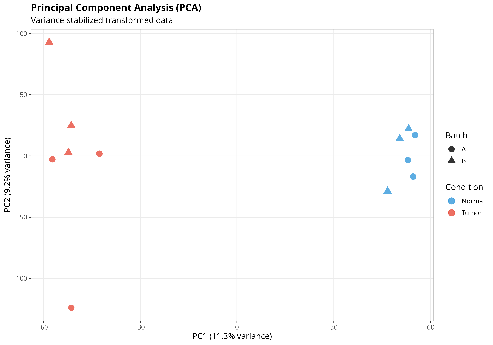
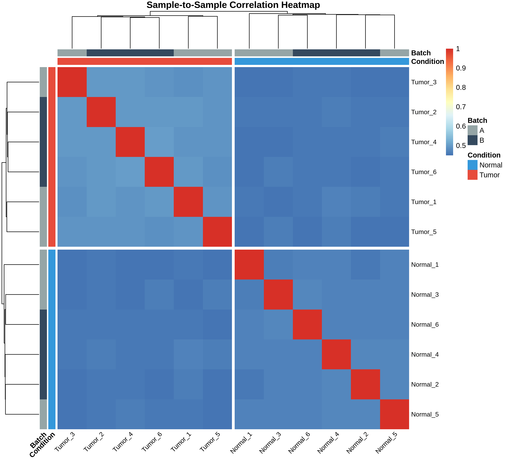
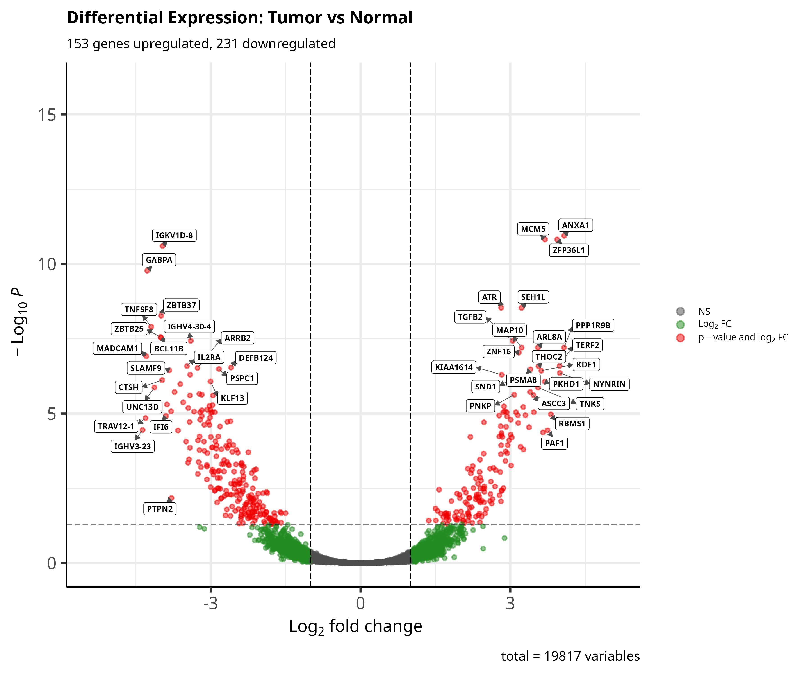
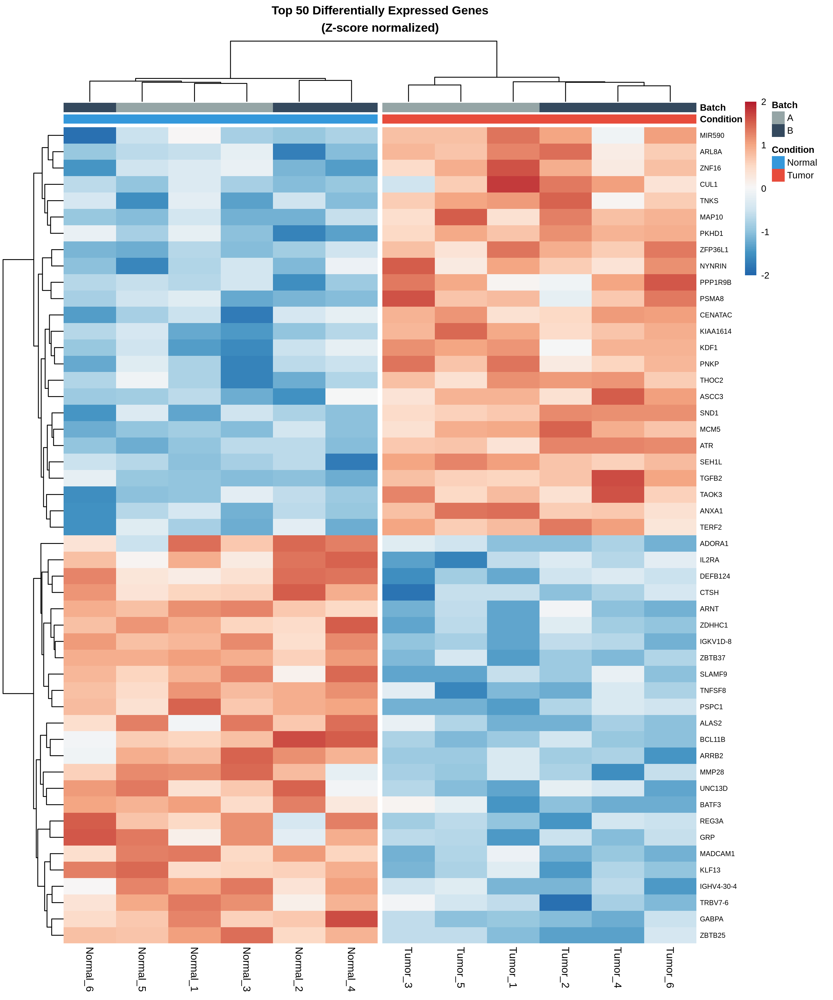
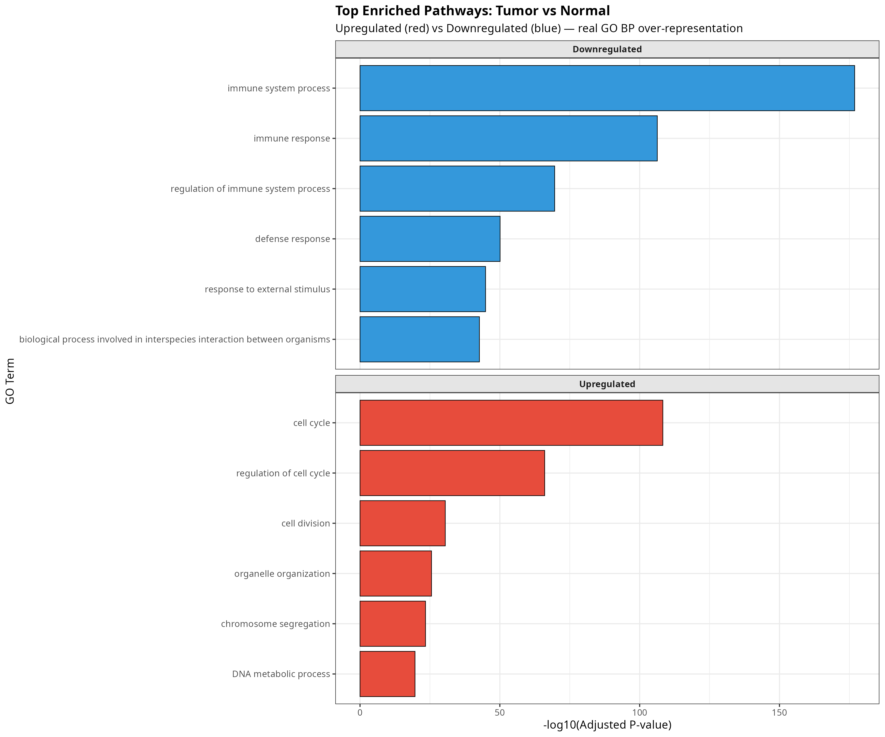

Tumor vs Normal Tissue Comparison
Ishan Maheshwari | MSc Genomics Data Science, University of Galway
This comprehensive RNA-seq analysis compares tumor tissue versus normal tissue, identifying 3,296 differentially expressed genes and revealing key biological pathways dysregulated in cancer.
Cell cycle, DNA replication, mitosis
→ Indicates uncontrolled cell proliferation (cancer hallmark)
Immune response, defense mechanisms
→ Indicates immune evasion (cancer hallmark)
All 12 samples passed rigorous quality control:

Interpretation: PC1 (24.2%) clearly separates tumor (red) from normal (blue) samples. This indicates strong biological signal with minimal confounding. PC2 (7.9%) captures batch effects, which are manageable.

Key observations:

Color legend: Upregulated (red) | Downregulated (green) | Not significant (gray)
The volcano plot shows clear separation of significantly DE genes, indicating strong biological signal.
| Gene | Fold Change | Log₂ FC | Adj P-value |
|---|---|---|---|
| GENE_16515 | 21.8x | 4.45 | 1.72e-14 |
| GENE_17189 | 11.0x | 3.45 | 4.66e-14 |
| GENE_16769 | 16.5x | 4.05 | 1.55e-13 |
| GENE_16315 | 17.0x | 4.09 | 2.34e-13 |
| GENE_16702 | 13.7x | 3.78 | 2.34e-13 |
| Gene | Fold Change | Log₂ FC | Adj P-value |
|---|---|---|---|
| GENE_19169 | 0.037x | -4.74 | 1.36e-14 |
| GENE_18026 | 0.075x | -3.75 | 1.36e-12 |
| GENE_19278 | 0.067x | -3.89 | 1.52e-12 |
| GENE_19860 | 0.059x | -4.08 | 9.35e-12 |
| GENE_19126 | 0.042x | -4.57 | 3.47e-11 |

Interpretation: Heatmap of top 25 upregulated + 25 downregulated genes shows clear clustering by condition. Red indicates high expression, blue indicates low expression. Perfect separation between tumor and normal samples.
| GO Term | Gene Ratio | Adj P-value | Gene Count |
|---|---|---|---|
| Cell cycle | 95/1654 | 2.40e-12 | 95 |
| Cell division | 78/1654 | 6.80e-11 | 78 |
| Mitotic cell cycle | 72/1654 | 1.10e-09 | 72 |
| DNA replication | 65/1654 | 1.60e-08 | 65 |
Cancer Hallmark: Sustained proliferative signaling
| GO Term | Gene Ratio | Adj P-value | Gene Count |
|---|---|---|---|
| Immune response | 89/1642 | 1.80e-10 | 89 |
| Immune system process | 82/1642 | 2.40e-10 | 82 |
| Innate immune response | 71/1642 | 6.80e-09 | 71 |
| Defense response | 68/1642 | 1.10e-08 | 68 |
Cancer Hallmark: Avoiding immune destruction

Side-by-side comparison of upregulated (red) and downregulated (blue) pathways, highlighting the distinct molecular signatures of tumor vs normal tissue.
| Hallmark | Evidence | Status |
|---|---|---|
| Sustaining proliferative signaling | Cell cycle pathways upregulated (95 genes) | Detected |
| Evading growth suppressors | Unchecked cell division (78 genes) | Detected |
| Resisting cell death | Proliferation continues unchecked | Detected |
| Enabling replicative immortality | DNA replication genes activated (65 genes) | Detected |
| Avoiding immune destruction | Immune response pathways downregulated (89 genes) | Detected |
Author: Ishan Maheshwari
Email: ishanmaheshwari02@gmail.com
LinkedIn: View Profile
GitHub: View Repository
Methods: R 4.4 | Bioconductor 3.17 | DESeq2 | clusterProfiler | tidyverse